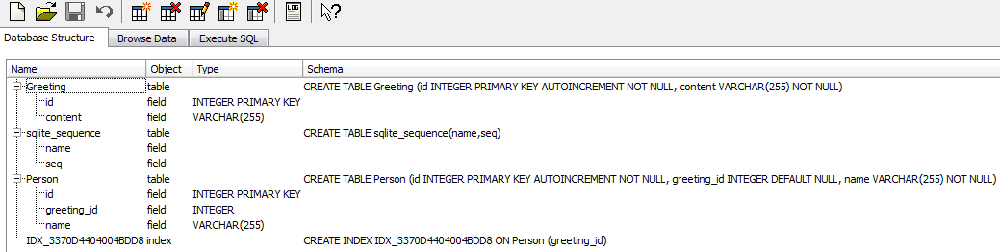

Doctrine 2 ORM
Object Relational Mapper for PHP 5.3
Some history of RDBMS persistence in PHP:
- mysql_query, mysql_fetch_array, mysql_*
- mysqli, PDO
- Doctrine 1.2, Propel 1.6, Zend_Db
mysql_query
mysql_connect('localhost', 'user', 'password');
mysql_select_db('test');
//simple example
mysql_query('INSERT INTO greetings (content) VALUES ("' . mysql_real_escape_string($_POST['greeting']) . '")');
//comments example
mysql_query('INSERT INTO users (username) VALUES ("' . mysql_real_escape_string($_POST['username']) . '")');
mysql_query('INSERT INTO comments (user_id, content) VALUES (' . mysql_insert_id() . ', "' . mysql_real_escape_string($_POST['content']) . '")');
mysql_query
-
We had to write our queries and our security (mysql_real_escape_string()) by ourselves.
-
Also, we had to keep track of identifiers of the inserted fields by ourselves.
-
We had to rewrite every function name (and probably also functionality) when switching database vendor.
-
Not really OO friendly, heh?
PDO
try {
$dbh = new PDO('mysql:host=localhost;dbname=test', 'user', 'password');
//simple example
$sth = $dbh->prepare('INSERT INTO greetings (content) VALUES (:content);
$sth->execute(array(':content' => $_POST['content']));
//comments example
$sth = $dbh->prepare('INSERT INTO users (username) VALUES (:username)');
$sth->execute(array(':username' => $_POST['username']));
$sth = $dbh->prepare('INSERT INTO comments (user_id, content) VALUES (user_id, :content)');
$sth->execute(array(':user_id' => $dbh->lastInsertId(), ':content' => $_POST['content']);
} catch (PDOException $e) {
echo $e->getMessage();
}
PDO
-
We now can connect to different databases. MySQL is no more the only option!
-
Security is given by named parameters, escaped for us by PDO!
-
Prepared statements make our queries easier to reuse!
-
Exceptions are used, we can now catch them!
-
Queries are still performed in the SQL dialect of the vendor, which could make our code not 100% portable.
-
Still have to keep track of identifiers of the inserted fields by ourselves.
Doctrine 1.2
An Active Record implementation
Greeting record definition
class Greeting extends Doctrine_Record
{
public function setTableDefinition()
{
$this->setTableName('greetings');
$this->hasColumn(
'content',
'string',
255,
array(
'type' => 'string',
'length' => '255'
)
);
}
}
//simple example
$greeting = new Greeting();
$greeting->content = $_POST['content'];
$greeting->save();
User record definition
class User extends Doctrine_Record
{
public function setTableDefinition()
{
$this->setTableName('users');
$this->hasColumn(
'username',
'string',
255,
array(
'type' => 'text',
)
);
}
public function setUp()
{
$this->hasMany(
'Comments as Comments',
array(
'refClass' => 'Comment',
'local' => 'id',
'foreign' => 'user_id'
)
);
}
}
Person record definition
class Comment extends Doctrine_Record
{
public function setTableDefinition()
{
$this->setTableName('comments');
$this->hasColumn(
'content',
'string',
255,
array(
'type' => 'string',
'length' => '255'
)
);
$this->hasColumn(
'user_id',
'string',
255,
array(
'type' => 'integer',
)
);
}
public function setUp()
{
$this->hasOne(
'User',
array(
'refClass' => 'User',
'local' => 'user_id',
'foreign' => 'id'
)
);
}
}
//comments example
$user = new User();
$user->username = $_POST['username'];
$comment = new Comment();
$comment->content = $_POST['content'];
$user->Comments[] = $comment;
$comment->User = $user;
$user->save();
Doctrine 1.2
-
Objects are written to DB by Doctrine: no more SQL!
-
Associations are managed by Doctrine: no more foreign key mess!
-
Object-Oriented approach!
-
Database is abstracted by a powerful DBAL layer: no more SQL portability troubles!
-
Database can be generated by our models!
-
Table definition is set in our domain logic.
-
A lot of PHP "magic" is happening (__set, __get, etc.).
-
Our objects must extend Doctrine_Record to be used with Doctrine
Doctrine 2
What is Doctrine 2?
-
Doctrine 2 is a Data Mapper implementation:

-
Used the well known Java Persistence API (JPA, aka JSR 317) as initial blueprint
-
It separates persistence and domain logic. You are now able to port your logic to SQL, NoSQL, XML mappers, etc.
-
It provides around 3X better performance than Doctrine 1.2.
-
Your objects won't need to extend anything.
-
You are free to save anything you want to your database, just map it!
-
You can even map existing classes to database tables!
Doctrine 2 Requirements
-
PHP 5.3
-
Doctrine\Common (bundled)
A set of utilities common to all Doctrine projects
-
Doctrine\DBAL (bundled)
A very powerful Database ABstraction Layer
-
Symfony\Component\Console (bundled)
A CLI runner tool
-
Symfony\Component\Yaml (bundled)
If you work with YAML configuration
Getting started
mkdir doctrine-demo
cd doctrine-demo
mkdir library
mkdir library/Entity
touch library/Entity/Greeting.php
mkdir library/EntityProxy
chmod +w library/EntityProxy
git clone https://github.com/doctrine/doctrine2.git --recursive library/doctrine-orm
touch bootstrap.php
Create entities...
namespace Entity;
class Greeting
{
/** @var int */
private $id;
/** @var string */
private $content;
}
...add getters, setters, constructors, other methods...
namespace Entity;
class Greeting
{
/** @var int */
private $id;
/** @var string */
private $content;
public function __construct($content) {
$this->setContent($content);
}
/**
* @return int
*/
public function getId() {
return $this->id;
}
/**
* @return string
*/
public function getContent() {
return $this->content;
}
/**
* @param string $content
*/
public function setContent($content) {
$this->content = (string) $content;
}
}
...add mappings (@Annotations) to entities...
namespace Entity;
use Doctrine\ORM\Mapping as ORM;
/**
* @ORM\Entity
*/
class Greeting
{
/**
* @ORM\Id()
* @ORM\Column(type="integer")
* @ORM\GeneratedValue(strategy="AUTO")
* @var int
*/
private $id;
/**
* @ORM\Column(type="string", length=255)
* @var string
*/
private $content;
public function __construct($content) {
$this->setContent($content);
}
/**
* @return int
*/
public function getId() {
return $this->id;
}
/**
* @return string
*/
public function getContent() {
return $this->content;
}
/**
* @param string $content
*/
public function setContent($content) {
$this->content = (string) $content;
}
}
Creating an EntityManager
Autoloading:
<?php
// bootstrap.php
use Doctrine\ORM\Tools\Setup,
Doctrine\ORM\EntityManager,
Doctrine\ORM\Configuration,
Doctrine\Common\Cache\ArrayCache as Cache,
Doctrine\Common\Annotations\AnnotationRegistry,
Doctrine\Common\ClassLoader;
//autoloading
require_once __DIR__ . '/library/doctrine-orm/lib/Doctrine/ORM/Tools/Setup.php';
Setup::registerAutoloadGit(__DIR__ . 'library/doctrine-orm');
$loader = new ClassLoader('Entity', __DIR__ . '/library');
$loader->register();
$loader = new ClassLoader('EntityProxy', __DIR__ . '/library');
$loader->register();
Configuration and metadata
//configuration
$config = new Configuration();
$cache = new Cache();
$config->setQueryCacheImpl($cache);
$config->setProxyDir(__DIR__ . '/library/EntityProxy');
$config->setProxyNamespace('EntityProxy');
$config->setAutoGenerateProxyClasses(true);
//mapping (example uses annotations, could be any of XML/YAML or plain PHP)
AnnotationRegistry::registerFile(__DIR__ . '/library/doctrine-orm/lib/Doctrine/ORM/Mapping/Driver/DoctrineAnnotations.php');
$driver = new Doctrine\ORM\Mapping\Driver\AnnotationDriver(
new Doctrine\Common\Annotations\AnnotationReader(),
array(__DIR__ . '/library/Entity')
);
$config->setMetadataDriverImpl($driver);
$config->setMetadataCacheImpl($cache);
Creating the EntityManager
//getting the EntityManager
$em = EntityManager::create(
array(
'driver' => 'pdo_sqlite',
'path' => 'database.sqlite'
),
$config
);
Final result:
<?php
// bootstrap.php
use Doctrine\ORM\Tools\Setup,
Doctrine\ORM\EntityManager,
Doctrine\ORM\Configuration,
Doctrine\Common\Cache\ArrayCache as Cache,
Doctrine\Common\Annotations\AnnotationRegistry,
Doctrine\Common\ClassLoader;
//autoloading
require_once __DIR__ . '/library/doctrine-orm/lib/Doctrine/ORM/Tools/Setup.php';
Setup::registerAutoloadGit(__DIR__ . '/library/doctrine-orm');
$loader = new ClassLoader('Entity', __DIR__ . '/library');
$loader->register();
$loader = new ClassLoader('EntityProxy', __DIR__ . '/library');
$loader->register();
//configuration
$config = new Configuration();
$cache = new Cache();
$config->setQueryCacheImpl($cache);
$config->setProxyDir(__DIR__ . '/library/EntityProxy');
$config->setProxyNamespace('EntityProxy');
$config->setAutoGenerateProxyClasses(true);
//mapping (example uses annotations, could be any of XML/YAML or plain PHP)
AnnotationRegistry::registerFile(__DIR__ . '/library/doctrine-orm/lib/Doctrine/ORM/Mapping/Driver/DoctrineAnnotations.php');
$driver = new Doctrine\ORM\Mapping\Driver\AnnotationDriver(
new Doctrine\Common\Annotations\AnnotationReader(),
array(__DIR__ . '/library/Entity')
);
$config->setMetadataDriverImpl($driver);
$config->setMetadataCacheImpl($cache);
//getting the EntityManager
$em = EntityManager::create(
array(
'driver' => 'pdo_sqlite',
'path' => 'database.sqlite'
),
$config
);
Generating the schema
(Configuring doctrine-cli.php)
CLI runner
<?php
//doctrine-cli.php
use Symfony\Component\Console\Helper\HelperSet,
Doctrine\ORM\Tools\Console\Helper\EntityManagerHelper,
Doctrine\DBAL\Tools\Console\Helper\ConnectionHelper,
Doctrine\ORM\Tools\Console\ConsoleRunner;
require_once __DIR__ . '/bootstrap.php';
$helperSet = new HelperSet(array(
'em' => new EntityManagerHelper($em),
'conn' => new ConnectionHelper($em->getConnection())
));
ConsoleRunner::run($helperSet);
Generating the schema
$ php doctrine-cli.php orm:schema-tool:create
ATTENTION: This operation should not be executed in a production environment.
Creating database schema...
Database schema created successfully!
Generated database as seen by SQLite browser

Working with the EntityManager
Saving a "Entity\Greeting" object
//examples/1.php
use Entity\Greeting;
require_once __DIR__ . '/../bootstrap.php';
//Creating our greeting
$greeting = new Greeting('Hello World!');
//Registering $greeting with the EntityManager
$em->persist($greeting);
//Flushing all changes to database
$em->flush();
echo 'OK!';
Retrieving an "Entity\Greeting" object
//examples/2.php
require_once __DIR__ . '/../bootstrap.php';
//Finding Greeting with id = 1
$greeting = $em->find('Entity\Greeting', 1);
if($greeting) {
//The EntityManager has already provided us an object of type Entity\Greeting!
echo 'Found a greeting (instance of ' . get_class($greeting)
. ') with content ' . $greeting->getContent();
}else{
echo 'Couldn\'t find Greeting with id=1';
}
Updating an "Entity\Greeting" object
//examples/3.php
require_once __DIR__ . '/../bootstrap.php';
//Finding Greeting with id = 1
$greeting = $em->find('Entity\Greeting', 1);
if($greeting) {
echo $greeting->getContent() . PHP_EOL;
echo 'Changing the contents of found Greeting to "Hello Test!"' . PHP_EOL;
//Using Entity\Greeting to set a new content for the $greeting!
$greeting->setContent('Hello Test!');
//Flushing changes to database (triggers SQL updates)
$em->flush();
echo 'Now try loading 2.php again!' . PHP_EOL;
}else{
echo 'Couldn\'t find Greeting with id=1';
}
Finding "Entity\Greeting" objects
//examples/4.php
require_once __DIR__ . '/../bootstrap.php';
//A repository is like a "Table" containing our entities of a specified type
$repository = $em->getRepository('Entity\Greeting');
//Finding all Entity\Greeting with content = "Hello World!"
$worldGreetings = $repository->findBy(array('content' => 'Hello World!'));
//Finding all Entity\Greeting with content = "Hello Test!"
$testGreetings = $repository->findBy(array('content' => 'Hello Test!'));
//Displaying results
echo 'Found ' . count($worldGreetings) . ' "Hello World!" greetings:' . PHP_EOL;
foreach($worldGreetings as $worldGreeting) {
echo ' - ' . $worldGreeting->getId() . PHP_EOL;
}
echo 'Found ' . count($testGreetings) . ' "Hello Test!" greetings:' . PHP_EOL;
foreach($testGreetings as $testGreeting) {
echo ' - ' . $testGreeting->getId() . PHP_EOL;
}
Retrieving "Entity\Greeting" objects via DQL
//examples/5.php
require_once __DIR__ . '/../bootstrap.php';
//Creating a DQL query that selects all greetings with id >= 5 and id <= 10
$greetings = $em
->createQuery('SELECT g FROM Entity\Greeting g WHERE g.id >= 5 AND g.id <= 10')
->getResult();
//Displaying results
echo 'Found ' . count($greetings) . ' Entity\Greeting:' . PHP_EOL;
foreach($greetings as $greeting) {
echo ' - ' . $greeting->getId() . ' => ' . $greeting->getContent() . PHP_EOL;
}
Deleting "Entity\Greeting" objects
//examples/6.php
require_once __DIR__ . '/../bootstrap.php';
//Finding the last inserted greeting
$greetings = $em
->createQuery('SELECT g FROM Entity\Greeting g ORDER BY g.id DESC')
->setMaxResults(1) //we want only one result
->getResult();
if(!empty($greetings)) {
$greeting = reset($greetings);
echo 'Found greeting with id "' . $greeting->getId()
. '" and content "' . $greeting->getContent() . '"' . PHP_EOL;
$em->remove($greeting);
//Triggers delete
$em->flush();
echo 'Greeting deleted!' . PHP_EOL;
} else {
echo 'Could not find any Greeting' . PHP_EOL;
}
Working with associations
You will need additional code:
- Entity\Post
- Entity\Comment
We don't define IDs, we define how objects are related:
ONE Entity\Post
HAS MANY Entity\Comment
ONE Entity\Comment
HAS ONE Entity\Post
In Doctrine terms:
Entity\Post::comments
is a OneToMany relation to Entity\Comment, mapped by Entity\Comment#post
Entity\Comment::post
is a ManyToOne relation to Entity\Post, inversed by Entity\Post#comments
Available relations:
-
OneToMany (mapped by ManyToOne)
-
ManyToOne (inversed by OneToMany)
-
OneToOne (inversed/mapped by OneToOne)
-
ManyToMany (inversed/mapped by ManyToMany)
OneToMany and ManyToMany relations are represented in Doctrine by instances of the Doctrine\Common\Collections\Collection interface.
Relations ownership
Relationship between entities may be inversed (bidirectional) or unidirectional.
There is always an owning side of the relation.
A bidirectional relationship has both an owning side and an inverse side.
A unidirectional relationship has only an owning side.
The owning side of the relation is the one checked by Doctrine to determine changes to the relation graph.
Using associations
We will map some entities to check how associations work...
/** @ORM\Entity */
class User
{
/** @ORM\Id() @ORM\Column(type="integer") @ORM\GeneratedValue(strategy="AUTO") @var int */
private $id;
/** @ORM\Column(type="string", length=255) @var string */
private $login;
/**
* @ORM\OneToMany(targetEntity="Entity\Comment", mappedBy="user")
* @var Collection
*/
private $comments;
public function __construct($login) {
//Initializing collection. Doctrine recognizes Collections, not arrays!
$this->comments = new ArrayCollection();
$this->setLogin($login);
}
//Getters and setters
/** @return Collection */
public function getComments() {
return $this->comments;
}
/** @param Comment $comment */
public function addComment(Comment $comment) {
$this->comments->add($comment);
$comment->setUser($this);
}
}
/** @ORM\Entity */
class Comment
{
/** @ORM\Id() @ORM\Column(type="integer") @ORM\GeneratedValue(strategy="AUTO") @var int */
private $id;
/** @ORM\Column(type="string", length=255) @var string */
private $content;
/**
* @ORM\ManyToOne(targetEntity="Entity\User", inversedBy="comments")
* @var User|null
*/
private $user;
public function __construct($content) {
$this->setContent($content);
}
//Setters, getters
/** @return User|null */
public function getUser() {
return $this->user;
}
/** @param User $user */
public function setUser(User $user) {
if($user === null || $user instanceof User) {
$this->user = $user;
} else {
throw new InvalidArgumentException('$user must be instance of Entity\User or null!');
}
}
}
Now to the examples
Creating a User with a related Comment
//examples/7.php
use Entity\User,
Entity\Comment;
require_once __DIR__ . '/../bootstrap.php';
//Creating our user
$user = new User('Marco Pivetta');
$em->persist($user);
$comment = new Comment('This is a sample post!');
$em->persist($comment);
$user->addComment($comment);
//Flushing all changes to database
$em->flush();
echo 'OK!';
Fetching the User and it's related Comment
//examples/8.php
require_once __DIR__ . '/../bootstrap.php';
//Finding previously persisted user
$user = $em->find('Entity\User', 1);
if($user) {
echo 'Found an Entity\User: ' . PHP_EOL
. $user->getId() . ' => ' . $user->getLogin() . '(' . get_class($user) . ')' . PHP_EOL
. 'and ' . $user->getComments()->count() . ' Entity\Comment attached to it: ' . PHP_EOL;
foreach($user->getComments() as $comment) {
echo ' ' . $comment->getId() . ' => ' . $comment->getContent()
. ' (' . get_class($comment) . ')' . PHP_EOL;
}
} else {
echo 'Could not find Entity\User with id=1';
}
Attaching a Comment to an existing User
//examples/9.php
use Entity\Comment;
require_once __DIR__ . '/../bootstrap.php';
//Finding previously persisted user
$user = $em->find('Entity\User', 1);
if($user) {
echo 'Found an Entity\User: ' . PHP_EOL
. $user->getId() . ' => ' . $user->getLogin() . '(' . get_class($user) . ')' . PHP_EOL
. 'and ' . $user->getComments()->count() . ' Entity\Comment attached to it: ' . PHP_EOL;
echo 'Adding a Comment to the user';
$comment = new Comment('Comment generated at ' . time());
$em->persist($comment);
$user->addComment($comment);
$em->flush();
echo 'Comment has been attached to the user, try 8.php!';
} else {
echo 'Could not find Entity\User with id=1';
}
Removing a Comment attached to a User
//examples/10.php
require_once __DIR__ . '/../bootstrap.php';
$user = $em->find('Entity\User', 1);
if($user) {
echo 'Found an Entity\User: ' . PHP_EOL
. $user->getId() . ' => ' . $user->getLogin() . '(' . get_class($user) . ')' . PHP_EOL
. 'and ' . $user->getComments()->count() . ' Entity\Comment attached to it: ' . PHP_EOL;
if($comment = $user->getComments()->first()) {
echo 'Removing the first attached comment!' . PHP_EOL;
echo 'Removing comment with id=' . $comment->getId() . PHP_EOL;
$em->remove($comment);
$em->flush();
} else {
echo 'Could not find any comments to remove...' . PHP_EOL;
}
} else {
echo 'Could not find Entity\User with id=1';
}
Joins in DQL: finding all users with a comment with id > 5
//examples/11.php
require_once __DIR__ . '/../bootstrap.php';
echo 'Searching all users with a comment with id > 5: ' . PHP_EOL;
$users = $em
->createQuery('SELECT u FROM Entity\User u JOIN u.comments c WHERE c.id > :id')
->setParameter('id', 5)
->getResult();
echo 'Found ' . count($users) . ':' . PHP_EOL;
foreach($users as $user) {
echo ' ' . $user->getId() . ' => ' . $user->getLogin() . ' (' . get_class($user) . ')' . PHP_EOL;
}
Other cool features of Doctrine 2
This tutorial should be extended with following examples and features:
-
inheritance types
-
mapping types - custom mapping types
-
transactions
-
caches, performance, memory leaks
-
other mapping drivers
-
proxies
-
events
-
cascade operations
-
optimistic locking - pessimistic locking
-
NativeSQL
-
Query Builder
-
Custom repositories
Other cool features of Doctrine 2
This tutorial should be extended with following examples and features:
-
other annotations:
- @Table
- @Entity
- @GeneratedValue
- @JoinTable
- @JoinColumn
- @Index
- @UniqueIndex
- @OrderBy
- @Version
Warnings
__clone
__wakeup
dumping
entity state